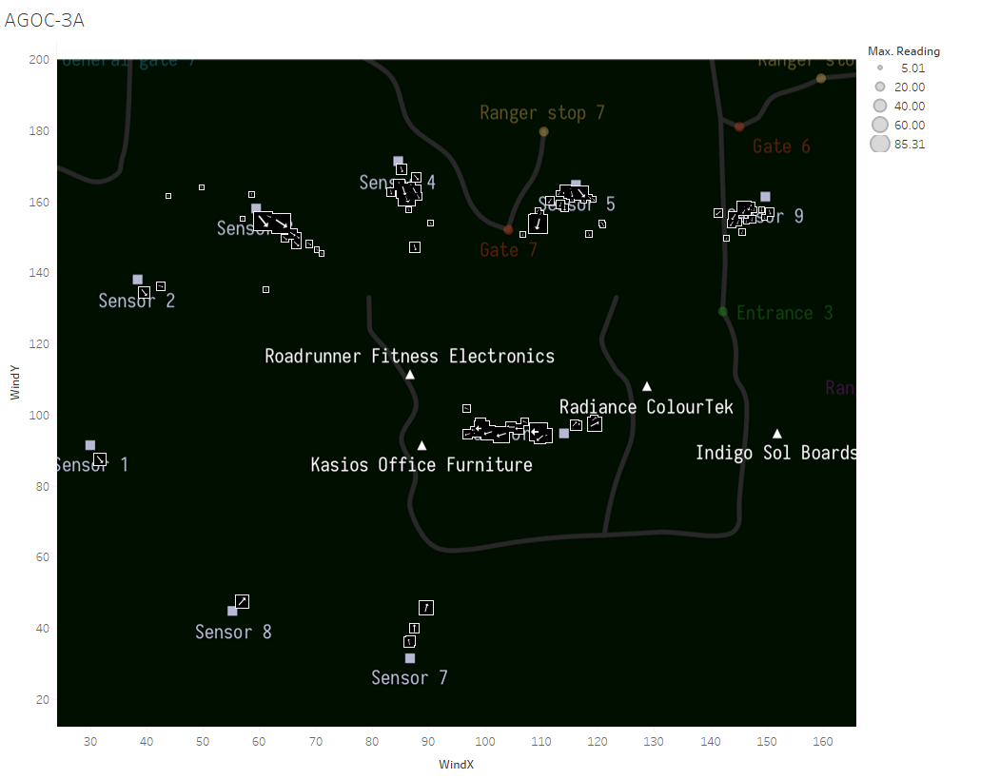
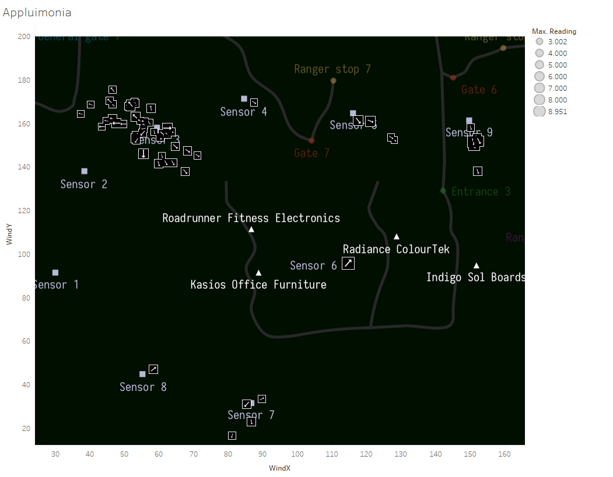
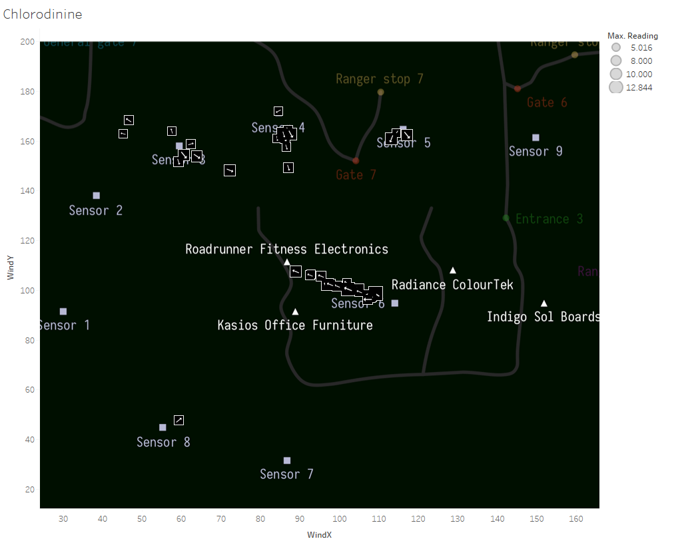
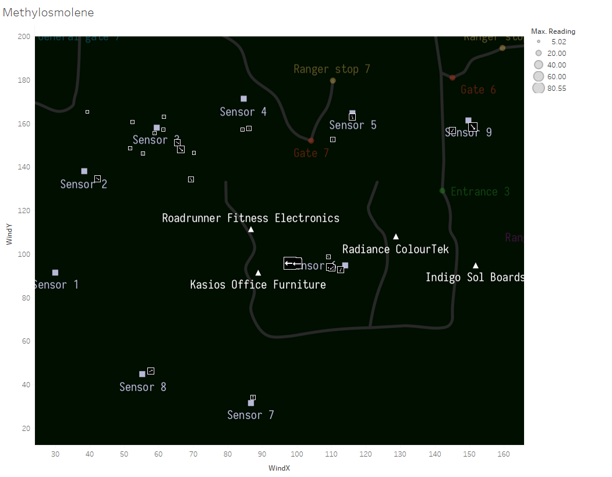

Assignment 2: Exploratory Data Analysis
Andy Zhu
Dataset
DESCRIPTION:
Ornithology student Mitch Vogel was immediately suspicious of the noxious gases just pouring out of the
smokestacks from the four manufacturing factories south of the nature preserve. He was almost certain that
all of these companies are contributing to the downfall of the poor Rose-crested Blue Pipit bird. Mitch
discovered that the state government has been monitoring the gaseous effluents from the factories through a
set of sensors, distributed around the factories, and set between the smokestacks, the city of Mistford and
the nature preserve. The state has given Mitch access to their air sampler data,meteorological data, and locations
map. Use visual analytics to help Mitch determine which (if any) of the factories may be contributing to the
problems of the Rose-crested Blue Pipit. I chose this data set because I was curious about what the other VAST
challenge were like.
The data is available online at: VAST Challenge 2017 MC2, Map Source
Initial Analysis Questions
- Characterize the sensors’ performance and operation. Are they all working properly at all times? Can you detect any unexpected behaviors of the sensors through analyzing the readings they capture?
- Which chemicals are being detected by the sensor group? What patterns of chemical releases do you see, as being reported in the data?
- Which factories are responsible for which chemical releases? Carefully describe how you determined this using all the data you have available. For the factories you identified, describe any observed patterns of operation revealed in the data.
Discoveries & Insights

Sensor readings for the 15th day of April. Differences in reading value is shown by size and each chemical is given an individual color. 6AM, 9AM, and 9PM have different readings for the same chemical - one large reading and one smaller. Since I want to determine the severity of the chemical emission, I chose the larger value.

Sensor readings for the first week of August. Of the three data sets, August is the only month where the data does not start on the first day. The sensor readings for August begin on 8/4/2016 6:00PM. Why are there no sensor readings between 8/1/2016 12:00AM and 8/4/2016 6:00PM?

Summation of sensor readings for each individual sensor seperated by color based on the chemical type. The number of recorded readings for each chemical type is also labeled. Although all the sensors receive approximately the same amount of reports, there is a clear difference in the sum of the readings. This means that some senors are detections larger readings of chemicals than others.
.png)
The sensor readings have placed in bins to show the number of occurrences for a specific reading range. For this dataset, I am looking for large emissions of chemicals detected by the sensors so I have filtered the data to only show readings above 5. From the image: High readings of AGOC-3A are detected from sensors 3-9. There are not many high readings of Appluimonia but the chemical is detected the most in sensor 9. High readings of Chlorodinine are mostly detected from sensor 6 with one instance in sensors 3 and 8. High readings of Methylosmolene is are mostly detected from sensor 3 and 6.

This image shows the sensor 8 reading seperated by hour and chemical type for April. This image is also similar to the first above image where I asked why the sensors had two readings for AGOC-3A. On 4/15/2016 6AM and 9AM there are two readings of AGOC-3A, however there are no readings for Methylosmolene at the same time. There are Methylosmolene readings before and after that time frame but not during. There is a possibility that the sensor is not recording high readings of Methylosmolene properly and mistaking it for AGOC-3A in April.

This image shows the sensor 6 reading seperated by hour and chemical type for August and December. Like the previous image above, whenever there are two readings of AGOC-3A - there is no reading of Methylosmolene during the same time. This pattern accordings in multiple sensors in all three months. This makes the notion that there is an error in the sensor recordings less likely. The common occurence of this pattern suggests that the additional reading of AGOC-3A is intentional and infact this additional reading is actually the missing Methylosmolene reading.

This map is generated by joining the sensor and meteorological data sets by date/time. Each arrow is pointing towards the direction the wind was originating from at the specific time. Using these arrows, it gives a general understanding where a chemical detected by a sensor originated from. From this image, it shows AGOC-3A chemical readings that are above 5 and the arrows themselves are scaled by the size of the reading to give better clarity. Sensors 3, 4, 5 are pointing towards the Fitness and Office factories but from sensor 6 we can assume that the Office factory is the main culprit for the AGOC-3A readings detected by its surrounding sensors. According to sensor 6, Radiance ColourTek also is emitting AGOC-3A chemicals. It is also important to note that based on the previous images, some of these AGOC-3A readings may actually be Methylosmolene readings.

Based on sensor 3, the chemical emission of Appluimonia could be due to either the Fitness or Office factories. Unlike AGOC-3A, sensor 6 does not help us determine which of the two factories is the cause. The largest reading does come from sensor 6 - pointing towards Radiance ColourTek. Sensor 9 also indicate that there is possible emissions from Indigo Sol Board. Overall, Appluimonia has the lowest readings found among the four chemicals.

Based on the image, there is only one facotry which seems to be generating high readings of Chlorodinine - Roadrunner Fitness Electronics. All the arrows from sensors 3, 4, 5, 6 and 8 are indicating that this factory is the culprit.

Despite the data for Methylosmolene readings being changed to AGOC-3A (as shown in previous images above), there is still enough data to indicate a culprit. Sensor 6 readings suggest that Kasios Office Furniture is the main cause of Methylosmolene emission. This assumption is further proven by the fact that AGOC-3A readings by sensor 6 also point towards Kasios as the main culprit. Kasios may be trying to mask their Methylosmolene emission as AGOC-3A.
Summary
In conclusion, the dataset for the sensors contain unexpected behaviors such as missing data or misrepresentation of chemical readings (multiple AGOC-3A readings). AGOC-3A emissions seem to be emitted by Kasios Office Furniture and Radiance ColourTek. Appluimonia emmisions seem to be emitted by Indigo Sol Board and Roadrunner Fitness Electronics. Chlorodinine emissions seem to be emitted by Roadrunner Fitness Electronics. Methylosmolene emissions seem to be emitted by Kasios Office Furniture. From this dataset, I learned that you need to dig deeper into the data because what the data presents to you at face value may not be the full story. For example, I was curious about the two readings of AGOC-3A but thought that the sensors were just detecting multiple readings because it was recording in three hour intervals. If I had not dug deeper into the data, I would have missed the pattern of missing data for Methylosmolene whenever there were two readings of AGOC-3A.